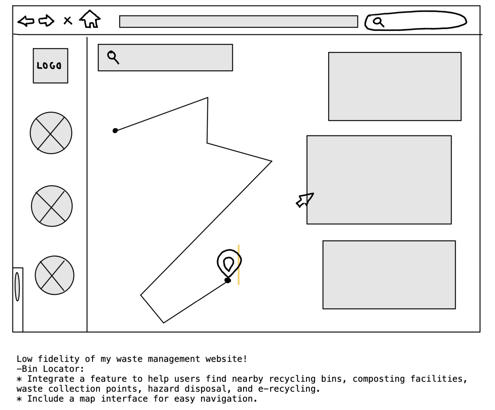

Maps Help Content

How to Use the Maps
Using the maps for bin locators is a simple and intuitive process on our web-app. Users start by accessing the designated map feature, where they can easily locate nearby recycling centers, composting facilities, and hazardous waste disposal sites. On the left side of the map interface, users can click on icons representing different types of waste disposal facilities, such as recycling plants or hazardous waste sites. This allows users to specify the type of location they want to find. Additionally, users have the option to refine their search by entering specific keywords or names of facilities they're looking for. As users interact with the map and search options, the right side of the interface dynamically updates to display relevant locations. Each location is listed with its name, contact information, distance from the user's current location, and address. Users can click on individual listings to view more detailed information about each location, including operating hours, accepted materials, and special instructions. After selecting a desired location, users can access navigation options to help them reach the destination. This may involve integrating with mapping services like Google Maps or Apple Maps to provide step-by-step directions. Once users have found the desired waste disposal facility and obtained necessary information, they can easily return to the main interface of the web-app to explore other features or continue their waste management journey.
